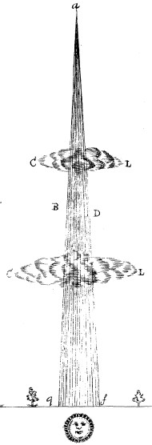

1 h 15 après le coucher du soleil
Extrait de la figure 1 Philosophical Transactions

À Upminster (Angleterre), le révérend William Derham rentre depuis la maison d'un ami
chez lui lorsqu'il voit dans le ciel plutôt dégagé à l'ouest une longue apparition pyramidale
perpendiculaire avec l'horizon (sans savoir depuis quand elle est là). Pour le témoin la base de cette
"pyramide" est sans aucun doute le soleil (alors déjà sous l'horizon). Son apex atteint 15 ou 20 ° sous
l'horizon. Elle est tout du long d'une couleur rouge rusty ; et lorsque le témoin la voit pour la
1ère fois, plutôt forte et vivace ; mais la partie supérieure est plus faible que la base, plus
proche de l'horizon. Au bout d'un moment, le phénomène devient progressivement de plus en plus faible, de sorte
qu'en 15 mn environ après sa 1ère observation, la partie supérieure (a.b.d. dans la fig. 1) n'est
presque plus visible. Mais la partie inférieure reste vivace bien plus longtemps, bien que devenant
progressivement de plus en plus courte. Les restes de la partie inférieure (b.d.e.f.) sont visible 1 h
entière après le coucher du soleil ; elle aurait sans doute été visible plus longtemps si l'horizon avait été
dégagé. But it was often in my Walk pent up with Trees, which not only obstructed my sight of the end of this
unusual Appearance, but also hindered me from an exquisite Observation of all the Particulars that might
probably occur. The whole Atmosphere seemed hazy, and full of Vapours, especially towards the Sun-set. The Moon
and Stars were that Evening bearded at that time, and succeeded with an Halo about the Moon afterwards.
Which disposition of the Air was probably the cause of the Phaenomenon. But the Pyramid was undoubtedly
imprinted upon the far distant Vapours of the Atmosphere; it being manifestly farther off, or lying beyond some
small thin Clouds (c.l.c.l.) that intercepted it, and in those parts covered and hid it. Altho' I have
the greatest part of my Life been ready enough to take notice of such Appearances, yet I do not remember I ever
saw any thing like it, except the white Pyramidal Glade, which is now entituled by the Name of the
Aurora Borealis. And it being (except in Colour and Length) so like that, I have thought it worth your
cognizance, and, if you think fit, of our most illustrious and famous Society also; because it may perchance in
some measure conduce to the Solution of that odd Phaenomenon, the Aurora Borealis. I was just going to
give you some of my Observations about the Migration of Birds this Year, which makes me hope, that that Subject
is within the reach of the Royal Society to discover. But being prevented, I have not time just now,
but shall reserve it for a more convenient Opportunity, when I have more leisure.I have searched every Night
since for this Pyramis Vespertina, but have not seen any such Appearance, although the nex Evening was
hazy and likely. I also looked out to see whether the Aurora Borealis would succeed in the room
thereof, but discovered no such thing "III. An Account of a Pyramidal Appearance in the Heavens, observed near Upminster in Essex, by the Reverend Mr. William Derham, F.R.S.Upminster, April 7. 1707" < Philosophical Transactions, vol. XXV (1706-1707), no. 310, 1707, pp. 2411-2412 < Deliyannis, Y.: "1707, April 3rd : Upminster (Essex, England)", Magonia Exchange, 22 mars 2008Bougard, M.: Chronique des ovni, 1977, p. 165 - Parlant d'un "objet pareil à une fine pyramide rouge".
Sur la côte sud de l'Angleterre, observation d'un énorme cylindre et d'un nuage
bizarre se déplaçant tout du long avec des lumières nocturnes, bas sur l'horizon Morton, John (révérend) Natural History of Northamptonshire, 1712, pp.
349-350, tableau 2, fig. 6 < Delair, J. Bernard: "The Camouflage Syndrome: Part 2", Awareness (trimestriel du groupe britannique Contact International), vol. 6,
n° 4, hiver 1977, pp. 12-15.